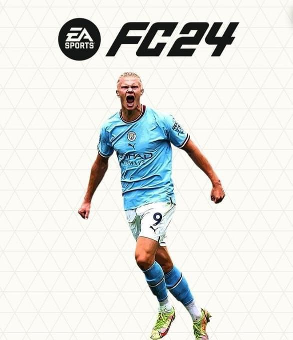

FIFA 24 is the latest installment in EA Sports’ iconic football simulation series. Featuring updated rosters, enhanced graphics, and new gameplay mechanics, FIFA 24 delivers the most immersive football experience yet.
Play as your favorite teams and players across multiple modes including Career, Ultimate Team, and Volta. FIFA 24 introduces HyperMotion V technology for ultra-realistic animations and smarter AI.
| Component | Minimum | Recommended |
|---|---|---|
| OS | Windows 10 (64-bit) | Windows 10/11 (64-bit) |
| Processor | Intel Core i5-6600k / AMD Ryzen 5 1600 | Intel Core i7-6700 / AMD Ryzen 7 2700X |
| Memory | 8 GB RAM | 16 GB RAM |
| Graphics | GTX 1050 Ti / RX 570 | RTX 3060 / RX 6700 XT |
| Storage | 100 GB SSD | 100 GB SSD |
Get the official PC version of FIFA 24 from the verified source below:
🔽 Download from EA Sports